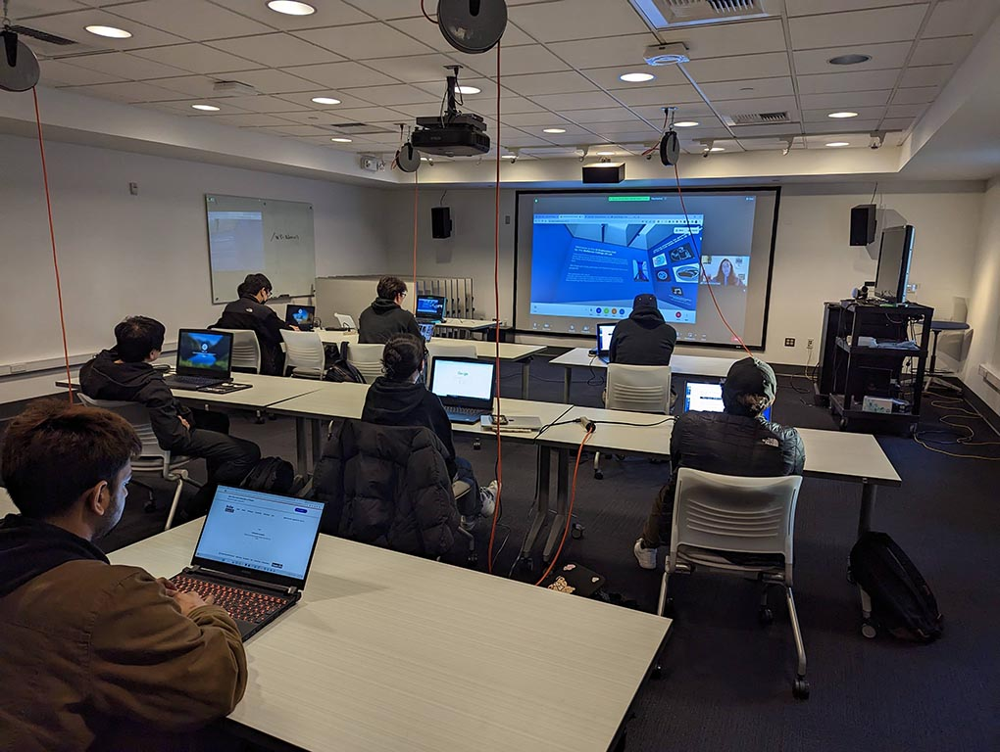
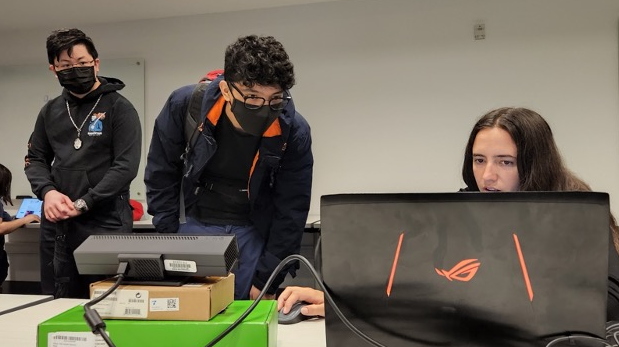
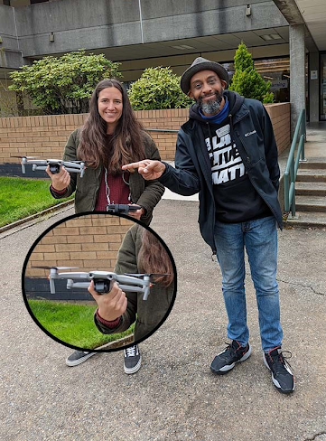

XR Lab.
In January of 2022 I started working for the XR Lab of Bellevue College in Seattle. This lab is committed to the application of new virtual reality and simulation technologies as tools for thought, providing students opportunities to augment their learning through immersive, multi-sensory experiences.
Here I've been able to share my knowledge with other students but also work in several projects that go from virtual galleries to video production and work with drones. Here are some of the projects I've done:
Here you can find a playlist with more projects and some pictures of my experience there:


